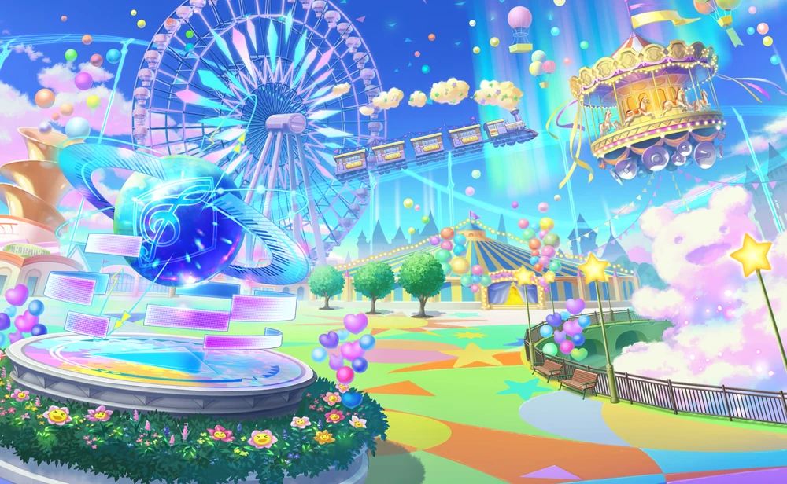
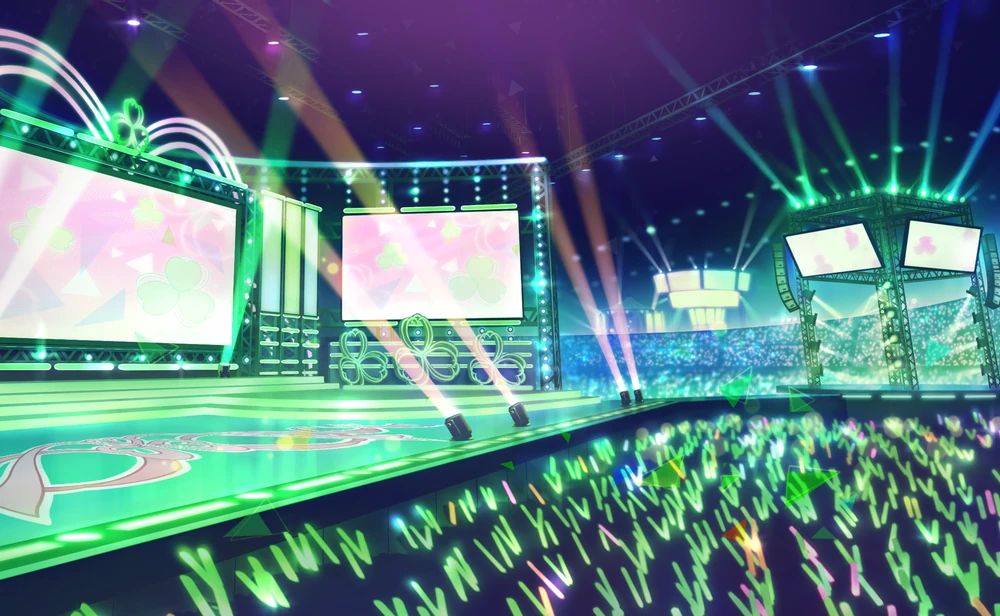
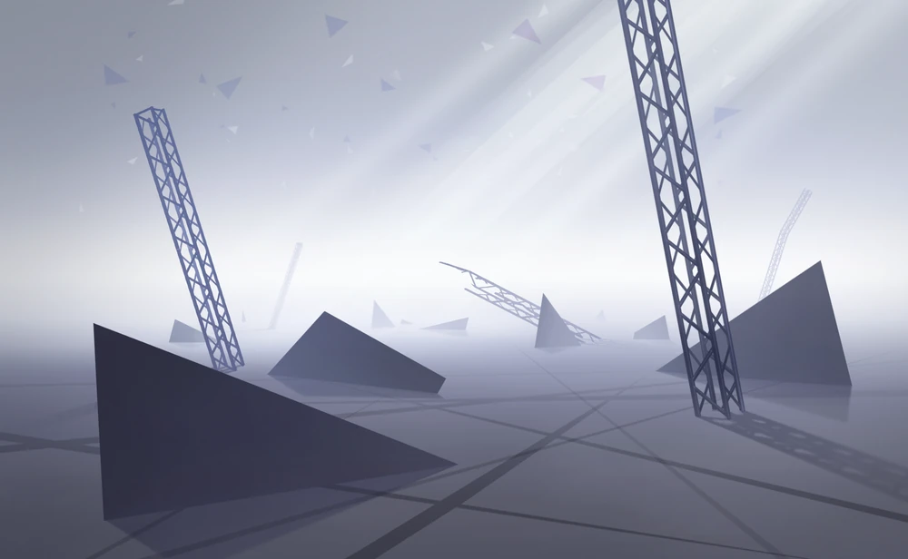
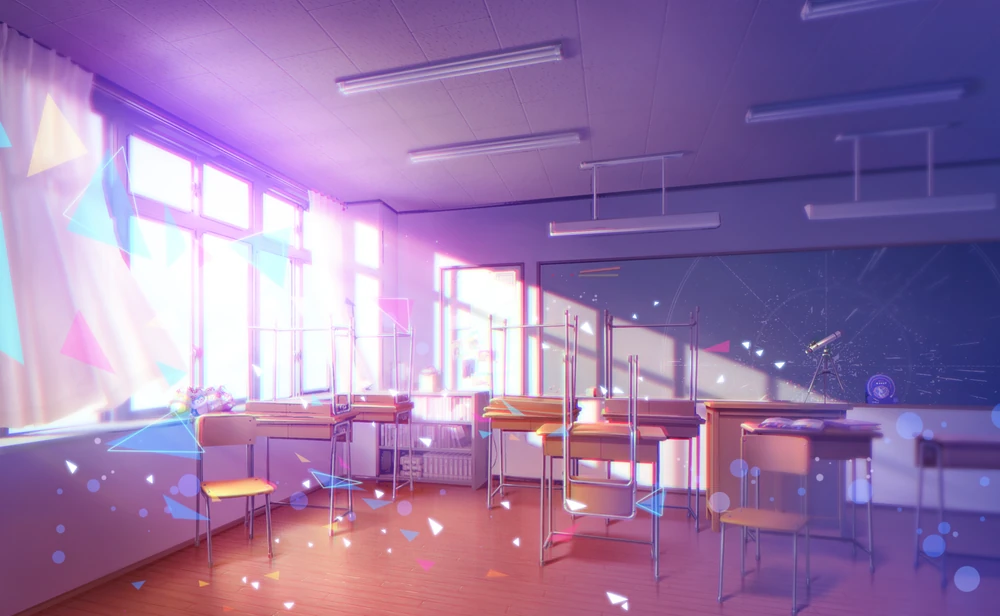
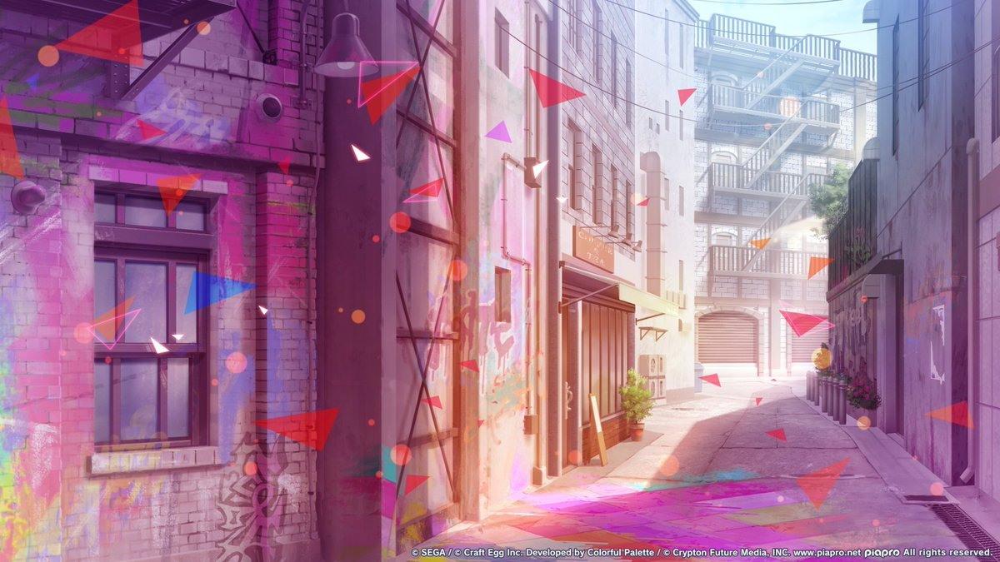
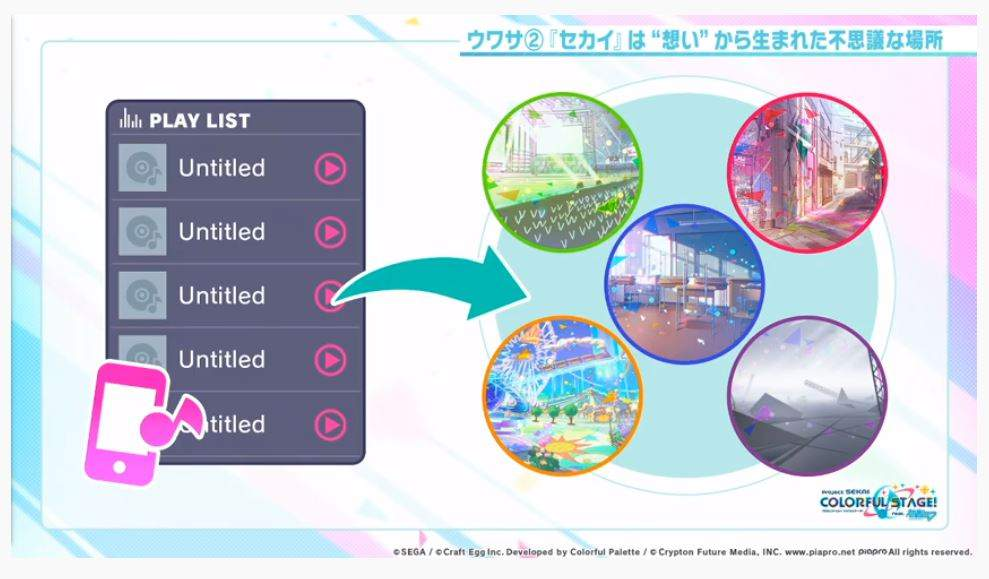

Tokyo, Shibuya.
A girl looked up at a huge screen at the crosswalk in the middle of the city filled with subculture, especially music.
SEKAI





A strange world that is different from the real world and reflects people’s “true feelings”.
A SEKAI exists for each of those feelings and changes its appearance to suit them.
HATSUNE MIKU
In the real world, she is a virtual singer who expresses songs created by creators around the world.
In Sekai, they change their appearance according to their feelings and support the owner of the feelings to find their "true feelings".
UNTITLED

A silent song that appears alongside SEKAI.
It acts as a key to guide people to SEKAI.
It earns its name as people discover their “true feelings” and sing with Miku and her friends, turning their feelings into a song.